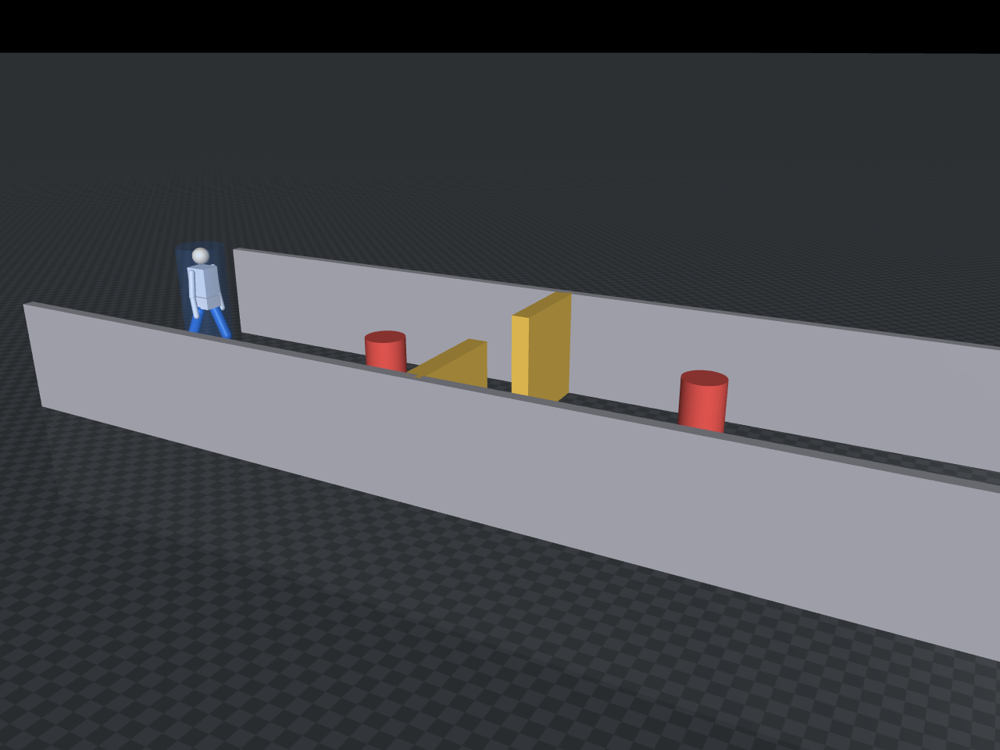
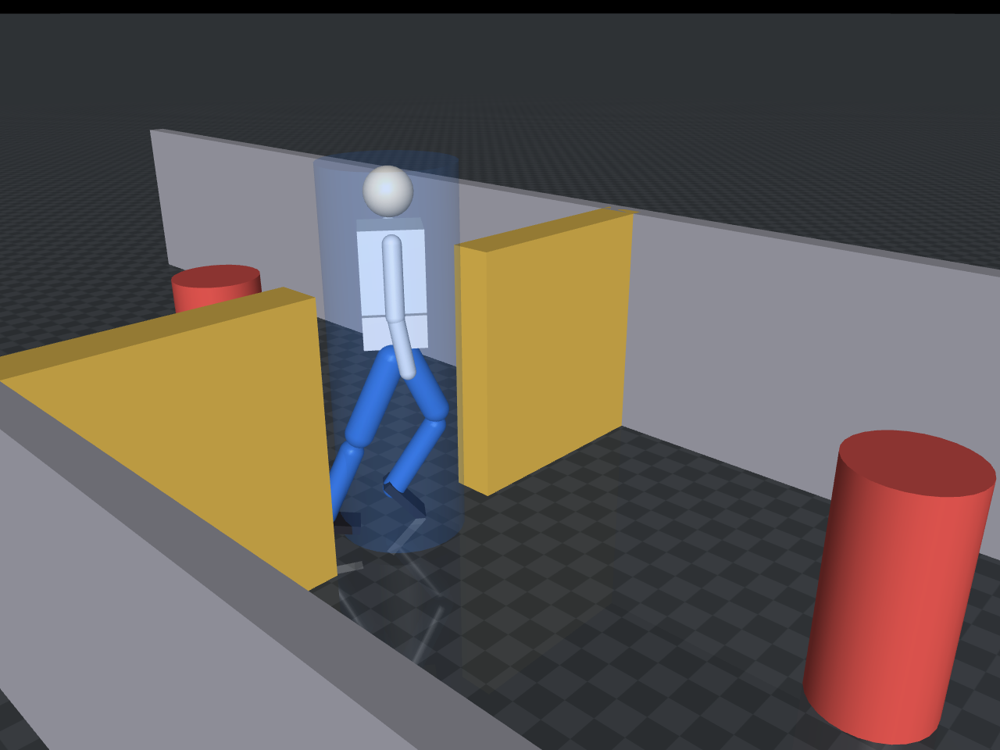
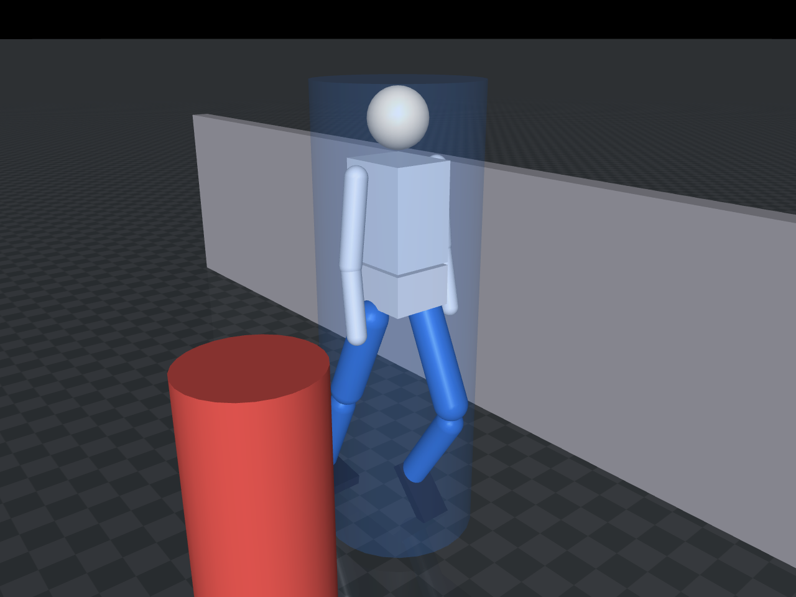
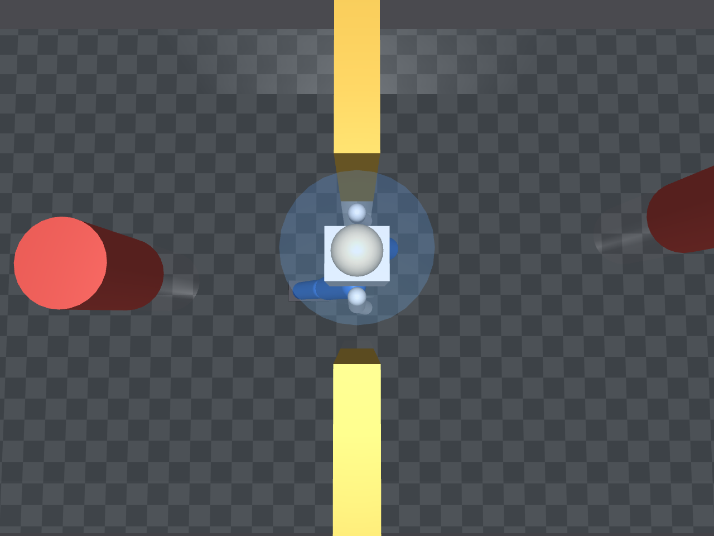
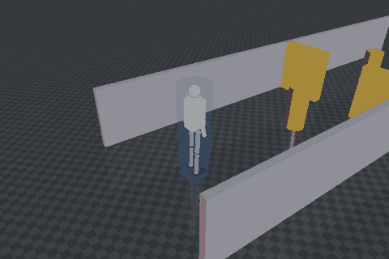

人形足迹下的局部避障算法对比（humanoid_local_planner_bench）
MuJoCo 场景：8 m 走廊 + 0.90 m 窄门 + 两个圆柱障碍。足迹半径 0.28 m（肩宽 0.45 m）的 人形从起点走到 8 m 外终点，横向对比 DWA 与 APF 两种局部规划器。
效果图
| 全景：走廊 + 障碍 + 门柱 | 过门：人形穿过 0.90 m 门洞 |
|---|---|
 |
 |
| 绕障：侧面通过圆柱障碍 | 门口俯视：0.56 m 身宽 vs 0.90 m 门宽 |
|---|---|
 |
 |
完整动画（DWA 走完全程）：

四张 scene_*.png 由 python3 main.py --figures 离屏渲染生成（文件名与 figures.py 的
SCENE_VIEWS 一一对应）；动图由 python3 main.py --gif 生成（默认 480×320、48 色、26 帧，953 KB；
--gif-width 640 实测 1462 KB，--gif-colors 可再降）。--shot 只按机位打开窗口
并保持姿势、不写文件，且保持期间不推进物理（腿没有驱动力，mj_step 会把步态压平）。
一、为什么做这个对比
仓库已有两个避障模块，都不覆盖本场景：
| 模块 | 方法 | 差异 |
|---|---|---|
humanoid_lidar_nn_perception |
1D-CNN + 行为克隆 MLP（神经网络） | 本文是经典几何法，无训练、结果可解析 |
mujoco_car_avoidance |
射线 + 距离分级状态机（地面小车） | 本文是人形足迹，且做算法横向对比 |
人形与轮式车的差别不在速度，在宽度：0.56 m 足迹塞进 0.90 m 门道，单侧净空 0.17 m。 这正是检验「质点假设」是否成立的临界条件。
二、场景与机器人模型
models/corridor_scene.xml：
走廊 x ∈ [-1, 9]，y = ±1.6 两道墙
窄门 x = 4，门柱内缘 y = ±0.45 → 净宽 0.90 m
障碍 (2.6, 0.0) 与 (6.0, 0.35)，半径 0.22 m
机器人 freejoint（运动学驱动）
├── footprint 半径 0.28 m 圆柱，contype=1 —— 唯一参与碰撞与射线的几何体
└── 人形外形 骨盆/躯干/头/双臂/双腿，contype=0 —— 纯视觉
碰撞用圆柱、外观用人形：判定需要稳定可解释的碰撞体，画面需要看出「是个人在走」。
二者分开——腿与躯干只负责渲染。实测空洞处（x=1.5）足迹到 obs_a 的 sim.clearance()
是 0.600 m（1.100 是两点中心距，减去足迹半径 0.28 与障碍半径 0.22），加腿前后完全一致，
test_gait_does_not_affect_clearance 专门守这条。脚底几何体底面在基座 z 之上 0.00 m，
站立相位下落在地面上，不会陷进去。
激光：72 束、360°、量程 4 m，mj_ray 对真实几何体求交。射线用
geomgroup=[1,0,1,1,1,1] 屏蔽 group=1 的机器人自身，否则会打在自己的腿上
（曾导致最近测距 0.043 m、规划器原地不动）。
步态：腿部三关节按行进距离摆动，步幅 0.7 m，左右腿相差 π，骨盆 12 mm 起伏：
hip = -0.45 * sin(φ)
knee = 1.05 * max(0, sin(φ))
ankle = 0.30 * sin(φ)
φ += v * dt / 0.7 * 2π
这不是行走控制器，只是让画面里的人形动起来。
三、两种规划器的实现要点
均从 AtsushiSakai/PythonRobotics（MIT）改写：障碍输入由「已知地图」改为「实时激光点」，
输出统一为 (v, ω)。
DWA：在速度空间栅格采样，预测 1.2 s 轨迹，先剔除会撞的候选（硬约束）， 再在可行解里按「朝向 + 速度」择优；无可行解时取最安全的一条兜底。
踩过的坑：最初把障碍代价直接减进总代价（
cost = α·head + γ·v − β·obs）， 符号导致「越贴障碍代价越优」，机器人会撞穿障碍。改成硬约束才正确。
APF：目标引力 + 障碍斥力合成方向，转成 (v, ω)。加了局部极小值逃逸：
连续 2 s 未靠近目标则叠加 1.5 s 切向分量。参数 k_att=2.4, k_rep=0.35, d0=0.60
——k_rep 取 0.7 时会在门口卡死。
Bug2 未纳入：跟墙逻辑按质点设计，而本场景的障碍就是门柱本身。0.56 m 足迹贴墙必然刮蹭；
把侧向阈值压到能进门的量级又会反复绕行。实测 side_thresh 从 0.92 扫到 0.34、
逃逸阈值从 0.60 降到 0.08，仍然要么刮蹭（最小间距 −0.17 m）、要么 60 s 超时。
属算法前提与场景不匹配，不是参数没调好。
四、复现
cd src/humanoid/humanoid_local_planner_bench
python3 -m pip install -r requirements.txt # 含 mujoco>=3.3.0
python3 main.py --version # 1.0.0
python3 main.py --test # 10 项检查
python3 main.py --headless # 对比表 + CSV + 三联图
python3 main.py --gif # 演示动图
MuJoCo 下界取 3.3。3.2.x 的 mj_geomDistance 在「圆柱 vs box」上返回的间距偏小：
同一个起点位姿得到 0.6873 而不是 1.2600，clearance() 会出现负值，而 collided() 仍是 0。
CorridorSim 初始化时就检查版本，低了直接抛错并给出升级命令。
ROS 2：
colcon build --packages-select humanoid_local_planner_bench --symlink-install
source install/setup.bash
ros2 launch humanoid_local_planner_bench main.launch.py planner:=dwa
ros2 topic echo /planner_bench_node/status --once
五、实测结果
Ubuntu 22.04 + Python 3.10.12 + MuJoCo 3.15.0，控制频率 20 Hz，到达判定半径 0.35 m。
| 规划器 | 到达 | 时间 (s) | 路径 (m) | 最小间距 (m) | 碰撞步 | 平均 |ω| (rad/s) |
|---|---|---|---|---|---|---|
| DWA | 是 | 38.00 | 17.15 | 0.167 | 0 | 0.25 |
| APF | 是 | 17.35 | 17.39 | 0.140 | 0 | 0.83 |
- 两者都能通过 0.90 m 窄门（单侧净空 0.17 m），全程零碰撞。
- APF 快 2.2 倍（17.35 vs 38.00 s），但转向抖动大（平均 |ω| 是 DWA 的 3.3 倍）。 合成力方向对激光点分布敏感，在门柱之间来回修正。
- DWA 慢而平滑：速度栅格采样 + 硬约束使它倾向小幅调整，安全余量更大。速度窗口按
加速度
acc=0.6 m/s²、角加速度w_acc=2.0 rad/s²限制在本周期可达范围内（HORIZON_STEPS=8）， 不是全速度空间撒点。 - 路径长度接近（17.15 vs 17.39 m），都远长于直线 8.00 m——绕障与穿门本身的代价。
六、能力边界
- 不含平衡控制：底座运动学驱动，只评价规划层，不评价"人形能否真的走过去"。
- 步态仅用于可视化：腿部
contype=0，不参与碰撞、不产生推进力。 - 视觉穿插：大幅摆腿时腿可能与障碍画面重叠（腿无碰撞体），碰撞判定一律按足迹圆柱。
- 速度指令未限幅：输出存在抖动，实际部署需加低通或速度斜坡。
- 单一场景：一条走廊 + 一道窄门，结论不外推到开阔地或动态障碍。
七、参数
| 参数 | 位置 | 默认 | 说明 |
|---|---|---|---|
CONTROL_HZ |
config.py |
20 Hz | 规划频率 |
N_RAYS / RAY_RANGE |
config.py |
72 / 4.0 m | 激光束数与量程 |
START / GOAL / GOAL_TOL |
config.py |
(0,0,0) / (8,0) / 0.35 m | 起终点与到达判据 |
planner |
config/params.yaml |
dwa |
ROS 节点用的规划器 |
time_limit |
config/params.yaml |
60 s | 单次实验时长上限 |